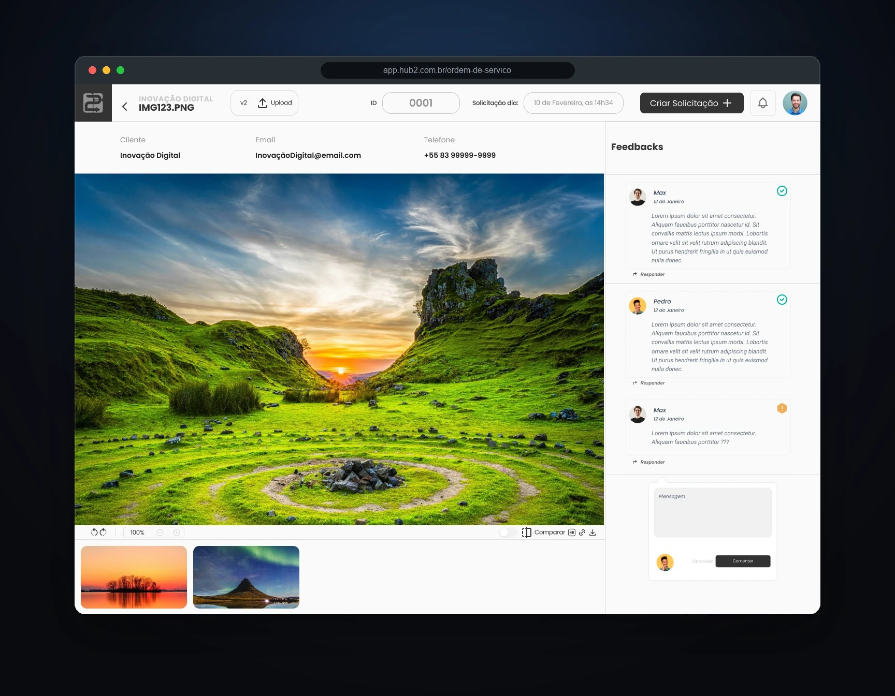
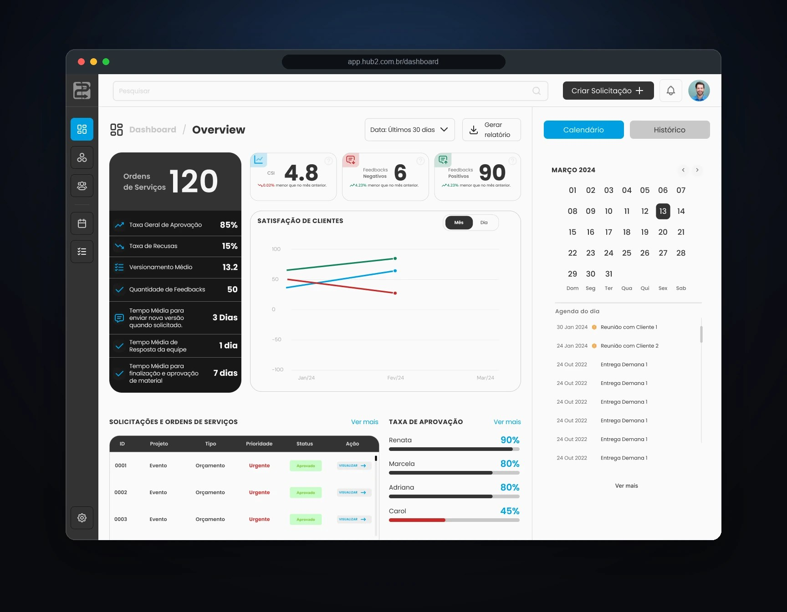
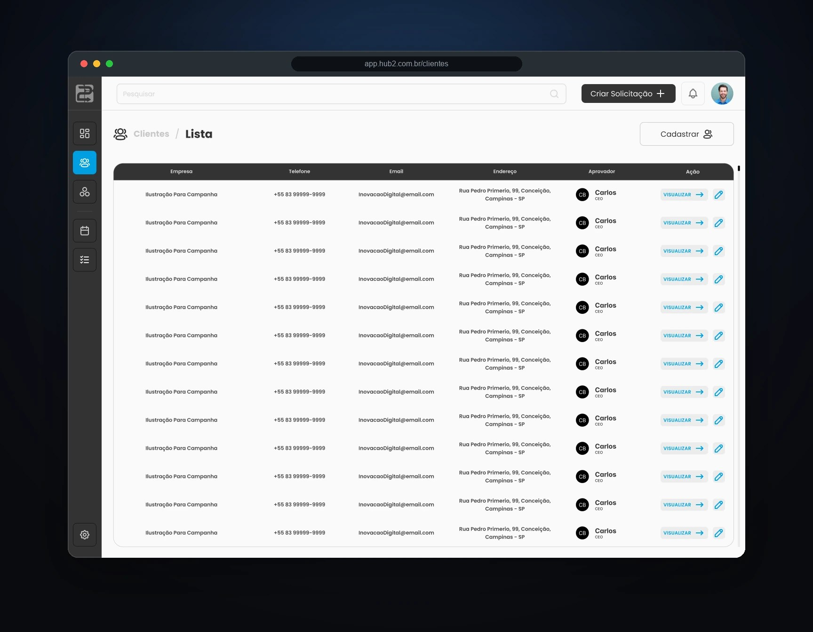
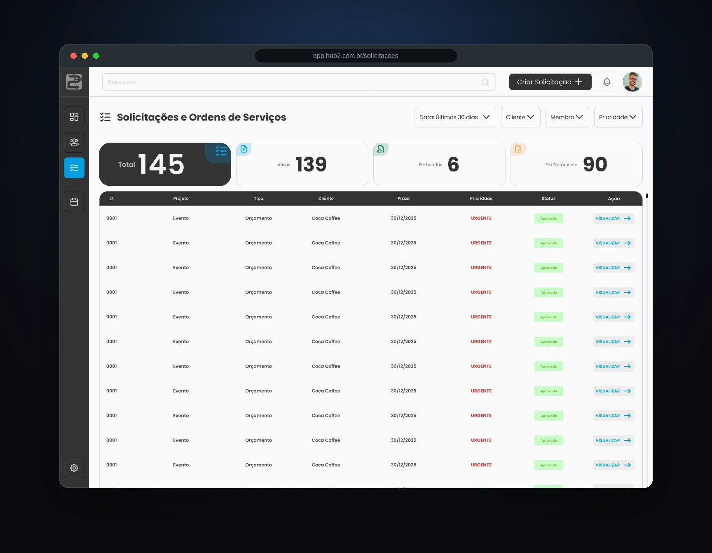
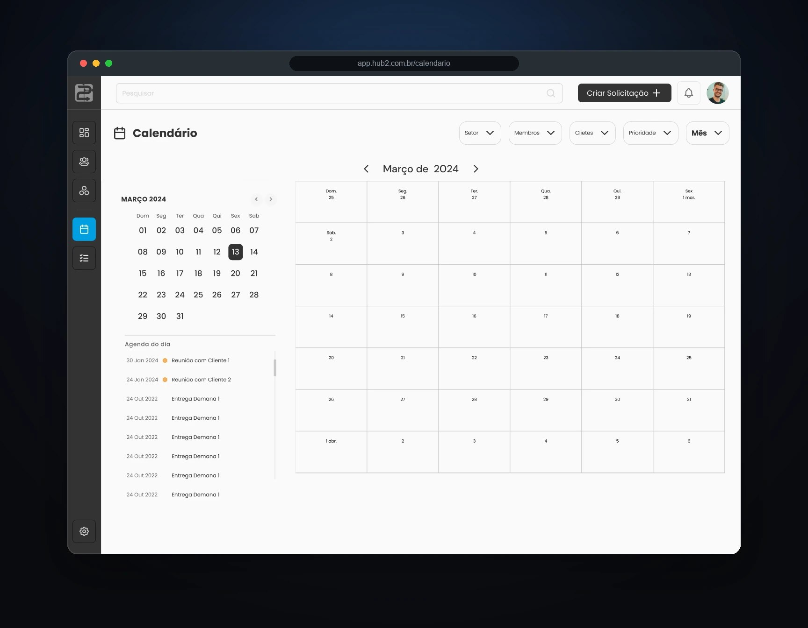
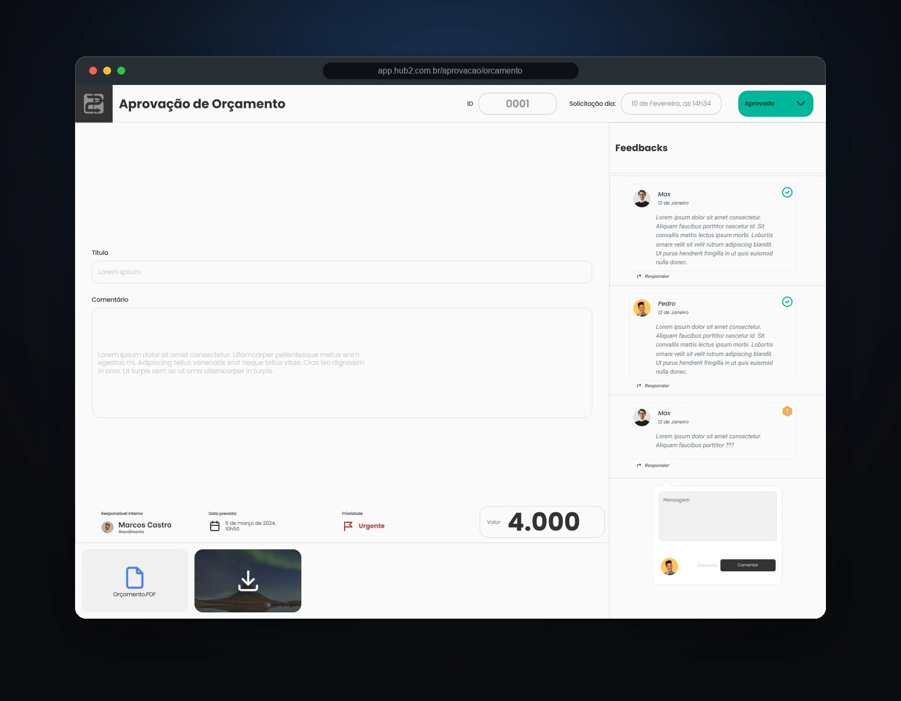
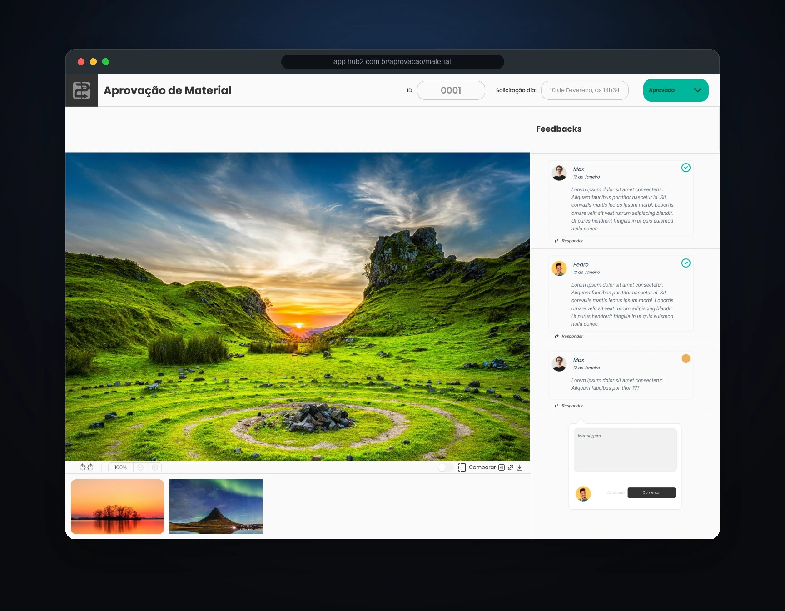

Na Dilis, desenhei o fluxo que vai da abertura do pedido à aprovação do cliente. No HUB2, cada demanda vira uma ordem de serviço com arquivos, versões e comentários. Também fui responsável pela interface e pela identidade visual do produto.
O problema
Os pedidos chegavam por WhatsApp, direct e e-mail. O Trello ajudava a acompanhar tarefas, mas não reunia a peça, suas versões e o feedback do cliente. Quando vinha um ajuste, nem sempre estava claro qual arquivo o comentário tratava ou o que já tinha sido aprovado.
Antes e depois
Antes
- Pedidos espalhados por mensagens e e-mail
- Sem histórico claro das versões
- Feedback e aprovações fora do contexto da peça
Com o HUB2
- Uma ordem de serviço para cada pedido
- Versões numeradas, que podem ser comparadas
- Comentários e aprovações ligados ao material
Como funciona

A ordem de serviço mostra a peça, a versão em análise e os comentários do cliente.
- 1Pedido vira OSA demanda recebe um registro próprio.
- 2Designer envia uma versãoO arquivo entra no histórico sem substituir os anteriores.
- 3Cliente comenta na peçaO feedback fica ligado à versão em análise.
- 4Cliente aprovaO aceite de orçamento, material ou plano de mídia é registrado.
- 5O histórico permaneceA equipe pode consultar versões, comentários e aprovações na OS.
Telas
As capturas mostram o fluxo de demandas, a operação da agência e as etapas de aprovação. Clique para ampliar.






Resultado
Ao reduzir os perfis, revisei também os modais e o fluxo de aprovação. A equipe da Dilis continua testando o produto com clientes. Ainda não há dados consolidados sobre tempo de aprovação ou retrabalho.